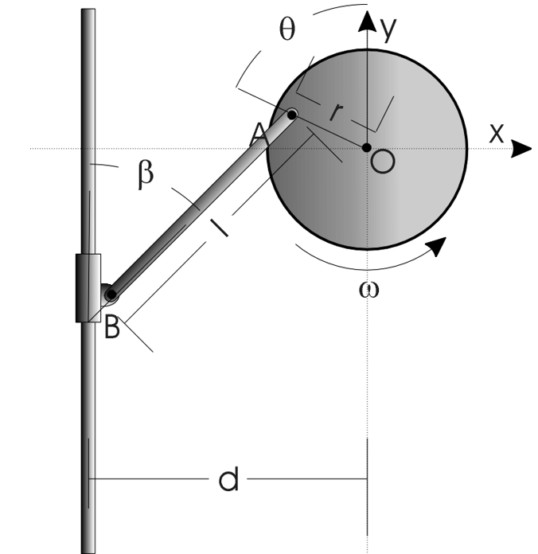

Tier 1 Candidate
Locomotive Crank
Model the collar velocity of a locomotive crank from geometry, rotation angle, and rotation rate, then compare the model to measured collar velocity.
Lab Content
Lab content compiled from source materials. Sections marked as incomplete will be updated as additional source files become available.
30,000 Ft View
In this experiment you will model the collar velocity of a locomotive crank as a function of the apparatus geometry, rotation angle, and rotation rate. You will then compare the modeled collar velocity to the measured collar velocity and use the mismatch to reason about measurement quality, model assumptions, calibration offsets, and physical effects such as linkage play.
Overview
Overview - Locomotive Crank
In this lab, you will analyze a locomotive crank apparatus: a rotating disk drives a rigid connecting bar, which moves a collar along a vertical slide. The measured data includes disk rotation and collar motion at multiple motor voltages.
Locomotive Crank Operation
Your job is to compare measured collar velocity against a geometry-based kinematic model. The focus is experimental methods: using the model responsibly, processing the data consistently, computing residuals, and explaining why real measurements differ from an ideal mechanism.
By the end of the lab, you should be able to:
- identify the geometry variables
r,l,d,theta, andbeta - review and verify the provided unverified kinematic derivation
- implement the collar velocity model in MATLAB
- compare model velocity and measured collar velocity across voltage settings
- compute residuals and residual statistics
- explain likely systematic error sources, especially linkage play and calibration offsets
Unverified Derivation
Provided Unverified Derivation - Locomotive Crank Kinematics
Student Instruction
The following derivation is provided so that this lab can focus on data analysis and model validation rather than deriving the crank-slider kinematics from scratch. Treat it as provided but unverified. Review the geometry, sign conventions, and algebra before using the final equation in your analysis.
Verification is the right word here: students are not being asked to create an original derivation, but they are responsible for checking whether the provided derivation is internally consistent and appropriate for the data they analyze.
Geometry And Variables

The apparatus consists of:
- A disk rotating about fixed point O
- A crank pin A located a radius r from O
- A rigid connecting bar of length l from A to the sliding collar point B
- A vertical slide for B
- A horizontal offset d from the vertical slide to the disk centerline
Variables:
| Symbol | Meaning |
|---|---|
| θ | Disk angle |
| β | Connecting-bar angle from the vertical slide |
| ω_D | Disk angular velocity, dθ/dt |
| ω_B | Connecting-bar angular velocity, dβ/dt |
| v_B,y | Vertical velocity of the collar |
Position Relations
Using unit vectors i to the right and j upward, the crank-pin position relative to O is written as:
r_A = −r sin(θ)i + r cos(θ)j
The collar point B relative to A is:
r_B/A = −l sin(β)i − l cos(β)j
The horizontal constraint gives:
sin(β) = (d − r sin(θ)) / l
Students should check this relation against the physical geometry and the chosen positive direction for θ.
Bar Angular Velocity
Differentiate the horizontal constraint:
sin(β) = (d − r sin(θ)) / l
which gives:
cos(β) dβ/dt = −(r/l) cos(θ) dθ/dt
Since dθ/dt = ω_D,
ω_B = dβ/dt = −[r cos(θ) / (l cos(β))]ω_D
The derivation PDF also reaches an equivalent magnitude relationship through rigid-body velocity relations. Students should verify the sign convention they use in MATLAB, especially if their theta direction or positive collar velocity direction differs from the diagram.
Collar Velocity
The collar is constrained to move vertically, so the horizontal velocity of B is zero. The vertical velocity follows from differentiating the B position or from the two-point rigid-body velocity relation.
Starting from:
r_B = di + [r cos(θ) − l cos(β)]j
differentiate:
v_B,y = −r sin(θ)dθ/dt + l sin(β)dβ/dt
Substitute dθ/dt = ω_D and the expression for dβ/dt:
v_B,y = −rω_D sin(θ) − rω_D cos(θ)tan(β)
Final compact form:
v_B,y = −ω_Dr[sin(θ) + cos(θ)tan(β)]
with:
β = sin⁻¹[(d − r sin(θ)) / l]
Verification Checklist
Before using the model, verify:
- |(d − r sin(θ))/l| ≤ 1 over the analyzed theta range
- θ, β, and trigonometric functions use radians in MATLAB
- r, l, d, and v_B,y use consistent units
- Positive velocity direction matches the plotted experimental collar velocity
- The model is evaluated at the measured theta values, not only a separate model grid
- Residuals are computed as signed differences using a stated convention
Important Limitation
This is a kinematic model. It predicts collar velocity from geometry and disk angular velocity. It does not model motor dynamics, friction, gravity, structural flex, or mechanical slack. Those effects should appear in the residual discussion, not as terms in the provided velocity equation unless the instructional team intentionally extends the model.
Model Equations - Locomotive Crank
Governing Kinematic Model
Use the geometric constraint:
sin(β) = (d − r sin(θ)) / l
which gives:
β = sin⁻¹[(d − r sin(θ)) / l]
The collar velocity model is:
v_mod = −ωr[sin(θ) + cos(θ)tan(β)]
where:
- v_mod is the modeled vertical collar velocity
- ω is the measured disk angular velocity
- θ is the measured disk angle
- r is the disk-center-to-pin radius
- l is the connecting-bar length
- d is the horizontal offset from slide to disk center
Use radians for θ and β.
MATLAB-Oriented Implementation
beta = asin((d - r .* sin(theta)) ./ l);
v_mod = -omega .* r .* (sin(theta) + cos(theta) .* tan(beta));
If r, l, and d are entered in centimeters, v_mod will be in centimeters per second when ω is in radians per second. If the experimental velocity is in millimeters per second, convert units before computing residuals.
Residual Analysis Checks
Use a signed residual and state the convention:
residual = v_exp − v_mod
For residuals, evaluate the model at the measured theta values. Do not compare experimental points to a model curve that was evaluated only on a separate smooth plotting grid.
Useful checks for each voltage include:
| Check | What it helps you notice |
|---|---|
| Mean residual | Possible systematic offset between model and measurement |
| Residual standard deviation | Typical scatter around the model |
| Number of samples | Whether enough points remain after trimming startup/end effects |
| Outlier notes | Whether a few unusual points dominate the comparison |
| Residuals versus theta | Periodic structure tied to linkage geometry or mechanical play |
| Residuals versus time | Drift, startup behavior, or time-dependent effects |
Use these checks to support an argument. They are not automatic answers.
Sanity Checks Before Interpreting Data
- Higher motor voltage should usually increase the magnitude of disk angular velocity.
- Higher disk angular velocity should usually increase the magnitude of collar velocity.
- The shape of velocity versus theta should remain broadly similar across voltage settings.
- Residuals versus theta may show periodic structure due to mechanical play in the linkage.
These are pre-interpretation checks. If the data violate them, inspect units, sign conventions, calibration, and setup before drawing a model-validity conclusion.
Procedure
Procedure - Locomotive Crank: Kinematic Model Validation
Overview
This lab investigates a locomotive crank apparatus: a motorized disk drives a rigid connecting bar, which moves a collar along a vertical slide. Students analyze rotary encoder and linear potentiometer data collected at multiple motor voltages, then compare measured collar velocity against a geometry-based kinematic model.
The lab has two distinct parts that must be done in sequence:
- Pre-Lab: Review and verify the provided kinematic derivation, then implement the MATLAB model.
- Analysis Lab: Load provided data, calibrate/interpret the measurements, compare model and experiment, and analyze residuals.
This 3501 version should focus on measurement, model implementation, residual analysis, and uncertainty/error-source reasoning. It should not require students to generate a full derivation from scratch.
Part 1 - Pre-Lab: Provided Unverified Derivation and MATLAB Setup
Before working with the data:
- Review the provided derivation
- Confirm the definitions of theta, beta, r, l, and d against the provided diagram in the derivation file
- Check the sign convention for positive disk rotation and positive collar velocity
- Verify that the final model is purely kinematic; gravity, friction, and inertia should not appear in the velocity relationship
- Implement a MATLAB function that computes collar velocity from geometry, disk angle, and disk angular velocity
- Run a model-only sanity plot of collar velocity versus simulated disk angle before loading experimental data
Suggested function signature:
v_mod = computeLocomotiveModel(r, d, l, theta, omega)
where theta and omega may be vectors from the measured data. Your function name may differ, but the inputs and units must be clear.
Part 2 - Hardware and Materials
The apparatus is a motorized disk connected to a vertically sliding collar by a rigid bar. See the provided apparatus diagram in the derivation file.
| Item | Role |
|---|---|
| Locomotive crank apparatus | Motorized disk, connecting bar, and vertical collar |
| Rotary encoder | Measures disk angular position theta |
| Linear potentiometer | Measures vertical collar position |
| NI MyDAQ | Data acquisition interface for the LabVIEW workflow |
| Regulated DC power supply | Drives the motor; do not exceed 11 V |
| Rulers | Used to measure r, l, and d |
| MATLAB | Used for model implementation, data processing, plots, and residual statistics |
Part 3 - Experimental Procedure Context
Some important procedure points:
- Verify the MyDAQ device name in NI MAX using the name specified by the teaching team for the deployed hardware.
- Connect the power supply with correct polarity so the crank rotates counterclockwise.
- Set the current limit to 5 A.
- Do not exceed 11 V.
- Place the collar at its lowest position before starting the VI; this establishes the theta reference.
- Calibrate the potentiometer using measured slide displacement and high/low voltage readings.
- Record data for roughly 8-10 rotations at each selected voltage.
- Save files using a voltage-aware naming convention such as
Test2_5pt6V.
Part 4 - Data Analysis Workflow
- Load each data file.
- Convert or normalize theta so it starts in a consistent range and increases continuously.
- Use only the first six revolutions unless the instructional team specifies otherwise.
- For residual calculations, compute the model at the same measured theta values used in the experimental data. A smooth theta grid is useful for a model-only sanity plot, but residuals must compare matched model and measured points.
- Plot measured collar velocity and modeled collar velocity versus theta for each voltage.
- Compute signed residuals:
residual = v_exp - v_mod
- Plot residuals versus time and versus theta.
- Compute residual checks for each voltage: mean residual, residual standard deviation, number of samples, and any notable outliers or discarded startup/end effects.
- Discuss whether residual structure looks random, biased, periodic, or tied to a plausible apparatus effect.
Residuals versus theta are especially important because mechanical play in the linkage can create periodic error locked to crank angle.
Known Pitfalls And Common Issues
| Issue | Why it matters | Mitigation |
|---|---|---|
| Collar not reset before VI start | Offsets the theta reference | Reset collar to the lowest position before starting acquisition |
| Clockwise crank rotation | Breaks the assumed sign convention | Reverse power-supply polarity if needed |
| Model evaluated on wrong theta values | Residuals no longer compare matched measurements | Evaluate model at measured theta values |
| Inconsistent plot axes | Hides voltage-to-voltage comparison | Use consistent axis limits across subplots |
| Residuals only plotted versus time | Can hide periodic systematic error | Plot residuals versus theta as well |
| Treating friction/gravity as model inputs | This is a kinematic model | Keep the governing equation geometric |
Instrumentation and DAQ Details
Instrumentation Summary - Locomotive Crank
Apparatus
| Component | Purpose | Student-facing note |
|---|---|---|
| Motorized disk | Drives crank angle theta | Positive rotation should match the model sign convention |
| Crank pin and connecting bar | Converts disk rotation into collar translation | Linkage play is a likely systematic error source |
| Vertical collar/slide | Translating output of the mechanism | Collar position and velocity are compared to model predictions |
| Rotary encoder | Measures disk angular position | Used to determine theta and angular velocity |
| Linear potentiometer | Measures collar displacement | Requires calibration from voltage to displacement |
| NI MyDAQ | Historical/current acquisition interface | Verify device name in NI MAX if collecting live data |
| DC power supply | Motor power | Current limit 5 A; do not exceed 11 V |
Representative Geometric Measurements
From the catalog:
| Quantity | Value | Notes |
|---|---|---|
| r | 7.5 cm +/- 0.05 cm | Disk center to crank pin A |
| l | 26 cm +/- 0.05 cm | Connecting bar length A to B |
| d | 15.5 cm +/- 0.05 cm | Horizontal distance from slide to disk center |
Use the geometry values provided with your assigned data set. If your data package or instructor gives updated values, use those values in your uncertainty calculations and model implementation.
Potentiometer Calibration
Historically the potentiometer was calibrated by measuring slide displacement and recording voltage at the highest and lowest collar positions. Expected calibration is approximately:
48-51 mm/V
Acquisition Notes
- The crank must rotate counterclockwise for the standard procedure.
- The collar must start at its lowest position before the VI starts.
- The VI start condition sets the theta reference.
- The power supply should not exceed 11 V.
- Loose connections and linkage play can produce noisy or systematically biased data.
Sample Data
Sample Data - Locomotive Crank
Data Dictionary
The LabVIEW data files saved by the locomotive crank VI have a naming convention like:
Test2_5pt6V
Expected variables after processing with the historical LCSDATA workflow:
| Variable | Description | Units | Notes |
|---|---|---|---|
| theta_exp | Disk angular position | degrees or radians, depending on processing stage | Normalize consistently before modeling |
| w_exp | Disk angular velocity | deg/s or rad/s | Convert to rad/s before using trigonometric model |
| v_exp | Vertical collar velocity | mm/s or cm/s | Match units with model output |
| time | Timestamp | s | Used for residual plots versus time |
Analysis Notes
- Compute model values at the measured
theta_expvalues. - Use consistent units before residual calculations.
- Use consistent axis limits across voltage subplots.
- Plot residuals versus both time and theta.
- Residuals versus theta are expected to reveal more systematic structure than residuals versus time.
- The catalog identifies linkage play/slop as a major physical error source.
FAQs
FAQs - Locomotive Crank
Do I need to derive the model from scratch?
No. A provided unverified derivation is included. You should review and verify the geometry, signs, units, and assumptions before using it, but the main lab task is model-data comparison.
Is this a dynamics model?
No. The provided model is kinematic. It predicts collar velocity from geometry, disk angle, and disk angular velocity. Gravity, friction, mass, and inertia do not belong in the ideal velocity equation.
Why do I need to be careful with degrees and radians?
MATLAB trigonometric functions use radians. If your data are in degrees, convert angle and angular velocity before using the model.
Should I compute model velocity on a smooth theta grid?
Use a smooth grid for a model-only sanity plot if helpful. For residuals, compute the model at the same theta values where the experiment was measured so each residual compares matched model and experimental points.
What residual should I compute?
Use a signed residual and state your convention. A common choice is:
residual = v_exp - v_mod
Why might residuals be periodic?
Mechanical play in the crank pin, connecting bar, or collar can depend on crank angle. Plotting residuals versus theta can reveal this structure more clearly than plotting residuals only versus time.
What should I do with expected behavior statements?
Use them as sanity checks before interpreting the data. They help catch sign, unit, calibration, or setup mistakes. They do not prove that the model is valid, and they should not replace your residual analysis.